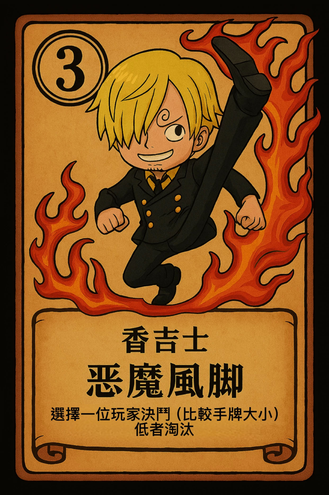
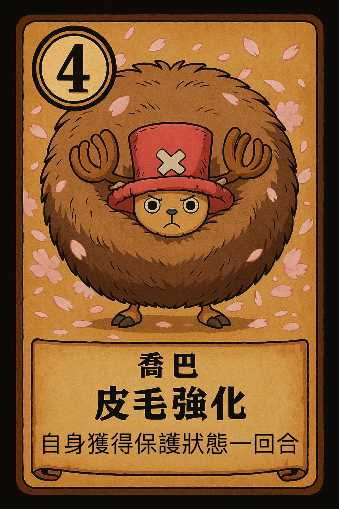
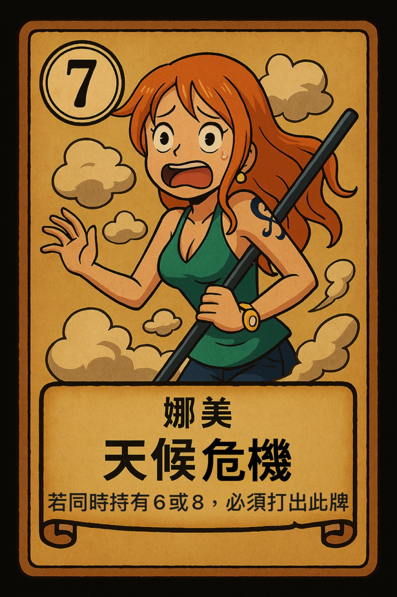
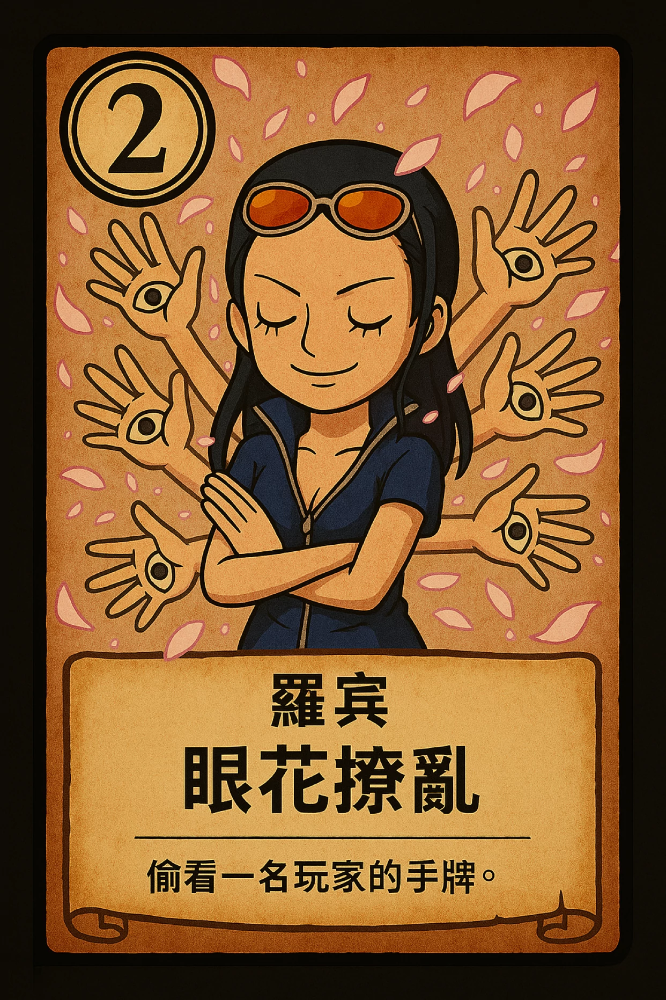
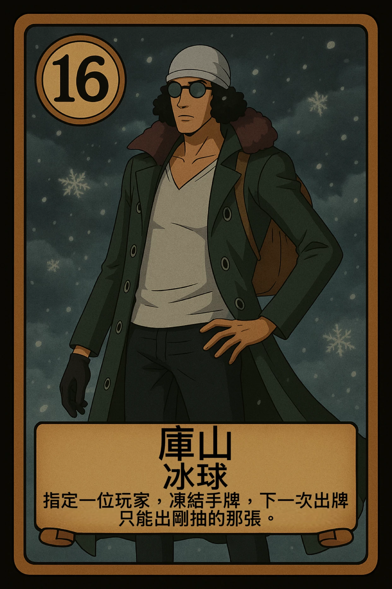

1 分鐘快速上手
先不用背全部卡片。你只要先知道自己的回合會怎麼進行，就已經能開始玩。
先看玩家列表和中央提示。輪到你時，畫面會明顯提示你可以操作。
抽牌階段就是先從牌堆抽 1 張。這時你手上會暫時有 2 張可選。
原本手牌和剛抽到的牌只能擇一打出，另一張會留在手上。
若卡片要猜數字、選玩家、確認效果，就按照彈窗一步步做完。
- 想辦法用角色效果讓別人出局。
- 同時保住自己，不要因為高風險卡而先倒。
- 回合一個一個打到剩最後存活者，或進入比大小階段分勝負。
- 多局累積寶箱金幣，最後再進結算頁面。
你每回合幾乎都在做這三件事。真的卡住時，就回頭看這句。
看懂主畫面在幹嘛
下面這張是簡化過的新手導覽圖。真正遊戲畫面會更豐富，但功能大致就是這些區塊。

很多玩家不是不懂規則，而是沒看懂畫面現在要他做什麼。你只要跟著中央提示走就好。


當你抽完牌後，這裡會變成最重要的地方：兩張擇一打出。
你的回合到底怎麼跑
下面做成一步一步的互動教學。按「下一步」，照實戰順序看一次。
先看玩家列表的亮框，以及中央提示文字。不是你回合時，你通常不能亂動牌。
輪到你之後，第一件事通常就是抽牌。畫面若出現「請抽牌」之類的提示，就代表現在要先點牌堆。
抽完之後，你會看到兩張牌：原本留在手上的那張與剛抽到的新牌。你要從中選 1 張打出。


只能選一張。
有些角色打出去後是立即生效，有些則要你再做一步，例如選目標、選數字、選是或否、按確認。
效果做完後，回合會往下輪。你這時就開始觀察其他人出了什麼、剩幾張強牌還沒出、誰身上有保護或異常狀態。
畫面出現什麼，就代表你要做什麼
這段是給「規則大概懂，但不知道 UI 在叫我幹嘛」的人看的。
代表現在是抽牌階段。先抽，不要急著去點別的地方。
代表現在要在原手牌與新抽牌之間做選擇，二選一打出。
代表這張卡需要目標，例如偷看、決鬥、凍結、棄牌等。
通常是要你猜牌值。像騙人布就會用到這種操作。
代表卡片有額外選擇，不是自動幫你做決定。
代表那張手牌被凍結，下次出牌可能只能打剛抽到的新牌。
你下回合可能會被跳過，先有心理準備，不是系統壞掉。
代表那位玩家比較難被影響，不是每張攻擊牌都能直接處理掉他。
基本版與強化版差在哪
同一張角色卡，不一定每次效果都一樣。關鍵在於：這張角色對應的場地現在有沒有開出來。
- 每張角色都有自己的對應場地。
- 沒對到場地時，使用的是一般效果。
- 對到場地時，使用的是強化效果。
- 所以同一張牌，有時普通、有時超強，不能死背一種玩法。
有些牌普通版還好，但強化版會直接變成關鍵大招。
強化：比大小時我方攻擊力 +1，更容易贏。
強化：變成閃避，下次被效果影響時能直接無效。
強化：打出時還能麻痺別人，讓對手下回合難受。
新手先記這幾張就夠了
不用一開始硬背全部 20 張。先把常見又好懂的幾類記起來，你就能玩得很順。
你怕自己等等會被針對時，喬巴很好用。先活下來，常常比硬打人更重要。
玩法直覺，就是找人比大小。新手很好理解，也能快速體會高牌的重要性。

看別人的手牌。這種卡不一定馬上淘汰人，但能讓你下一步更準。

讓對方棄牌重抽，很適合拆別人的計畫，也能逼高牌離手。
這張常讓新手混亂。記住：有些情況你會被迫打娜美；強化時還能讓別人麻痺。

凍結對手手牌，讓對方下次很可能只能打剛抽到的牌，節奏控制很強。
- 被追殺時，優先考慮保命牌，不一定要先進攻。
- 不知道出什麼時，資訊牌與保命牌通常比較穩。
- 高風險高回報的牌，先確認場上狀況再出。
- 如果某張牌在對應場地上，價值通常會大幅提升。